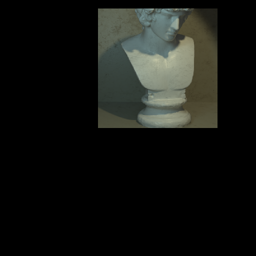

For our CSE 168 final project, we have chosen to implement option 3.3, the Image-Based Rendering: Light Field Viewer. For this milestone, we implemented a basic version of the light field viewer with no optimizations or add-ons.
The resource that we referred to heavily was the 1996 light field rendering paper mentioned in lecture. Since the writeup states that the Stanford data had issues with its formatting, we also found a dataset from the University of Konstanz which contains 4D light field data. The dataset contains 23 scenes of 9x9x512x512x3 light fields.
Light Field Rendering by Levoy and Hanrahan in SIGGRAPH 96
4D Light Field Dataset from University of Konstanz
There are several future additions we are considering for the final version of the project. One feature is prefiltering the light field using an aperture as in the original paper. This would help with antialiasing the light field and applying a blur to make the transitions more smooth.
Another option is compression since the 4D data takes up a lot of memory on the GPU. The paper uses vector quantization (VQ) compression to compress with a 120:1 ratio. Even at such a high ratio, this has minimal visual effects, so this method of compression is something we will look into. Hardware texture mapping could also help to optimize efficiency of sampling from and transforming the light field data.
Since the images in the light field dataset we're using are only 512x512 pixels, we needed to use some sort of interpolation method when resizing the final image. We settled on bilinear interpolation which provided the middle ground between quality and performance in our case.  
One challenge with light field rendering is the rapid rate at which the data grows. For 4D images, even increasing the size by a few pixels can quickly add up. The dataset we selected contains 9x9x512x512 pixels which are stored on the gpu as three 4-byte floats totaling 254803968 bytes or 254.8 mb. This is both slow to move between the gpu and cpu as well as memory inefficient.
To address this problem, various methods of data compression can be applied. We chose to use vector quantization (VQ) as that was one of the approaches taken in Levoy Hanrahan’s original paper. VQ works by selecting a set of vectors which best approximates the image known as the codebook and recording the closest matching codeword for each partition of the image. Then, only the codebook and list of codewords need to be transferred rather than the whole image.
In order to find the codebook, the quantizer must train on the image. The training process consists of three steps: Assign each tile from the image to the closest codeword
Update each codeword to be the average of all tiles assigned to it
If no tiles are assigned to it, then reinitialize it to a random tile
Calculate the mean squared error (MSE) and stop the training if it reaches a convergence threshold or reaches the maximum number of iterations.
Since this process can take a while we support saving and loading codewords to the disk as a text file. To further reduce training time, we also only train on a subset of the image, which is also the case in the original paper.
After finding the set codewords, the image must be encoded into these codewords. This task involves finding the codeword that is closest in Euclidean distance for each of the tiles. Since this can repeat thousands or even hundreds of thousands of times, we used a KD-tree to make this process significantly more efficient. We used the nanoflann header-only library for this so we would not have to implement KD-trees from scratch.
For rendering, both the codebook and encoded image are sent to the gpu. The codebook is stored as a buffer of float3 data and the encoded image is a buffer of indices to specific code words.